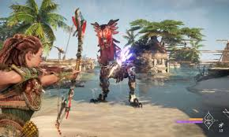
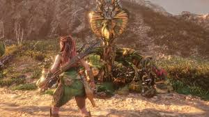

Horizon Forbidden West es la secuela de Horizon Zero Dawn, desarrollado por Guerrilla Games y lanzado en febrero de 2022 para PlayStation 4 y PlayStation 5. Este juego de acción y aventura en mundo abierto continúa la historia de Aloy, la protagonista, mientras enfrenta nuevos desafíos y descubre secretos más profundos sobre el misterioso mundo post-apocalíptico en el que vive.
¿De qué trata Horizon Forbidden West?
La historia de Horizon Forbidden West sigue a Aloy, una joven cazadora y exploradora, mientras intenta detener una plaga que está afectando a la vida en la Tierra. Esta plaga, conocida como la "muerte roja", está destruyendo la vida vegetal y animal en todo el mundo. En su búsqueda por encontrar una solución, Aloy viaja al oeste prohibido, una vasta región que está más allá de las fronteras conocidas de la tierra en la que vive, en busca de respuestas y recursos.
A medida que se adentra en esta nueva zona, Aloy descubre nuevas tribus, criaturas mecánicas y paisajes, pero también enfrenta enemigos más poderosos y secretos oscuros que podrían cambiar el destino de la humanidad. Durante el viaje, también se enfrenta a las máquinas (animales y criaturas robóticas) que dominan el mundo, y se encuentra con nuevas amenazas que van más allá de las que conoció en Horizon Zero Dawn.
 